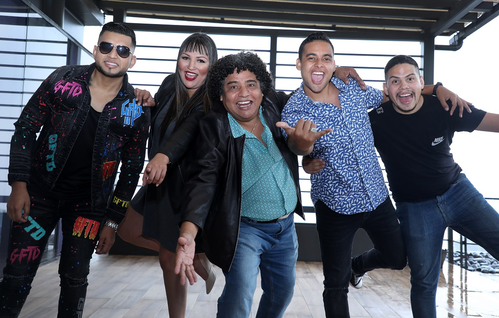
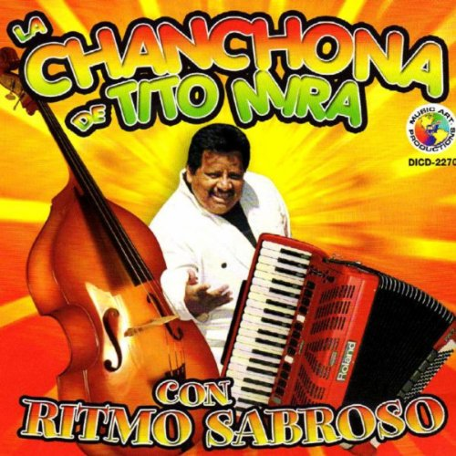
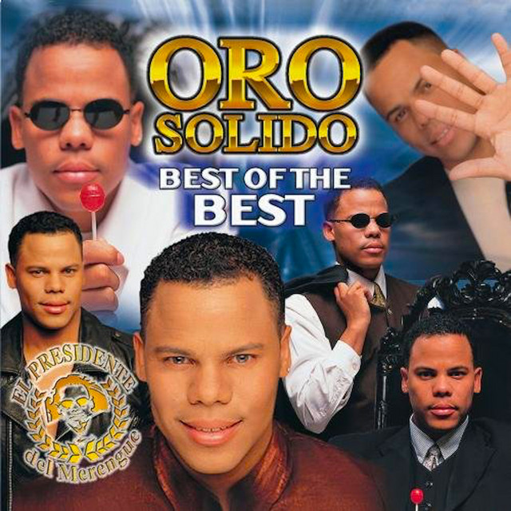
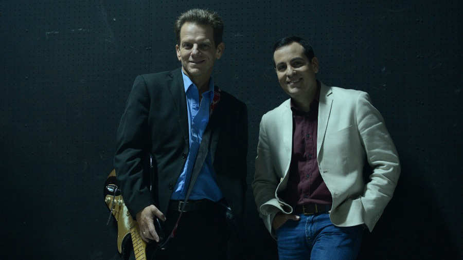
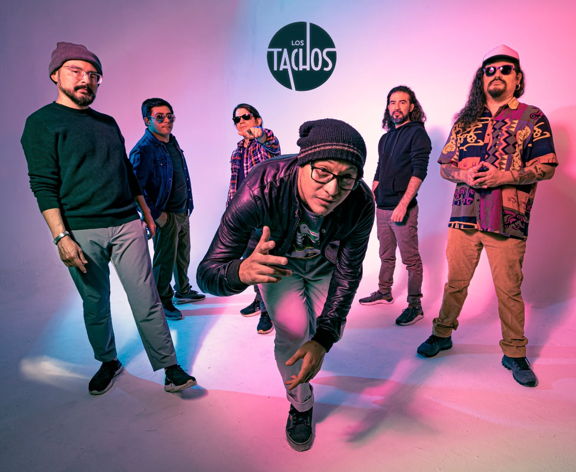
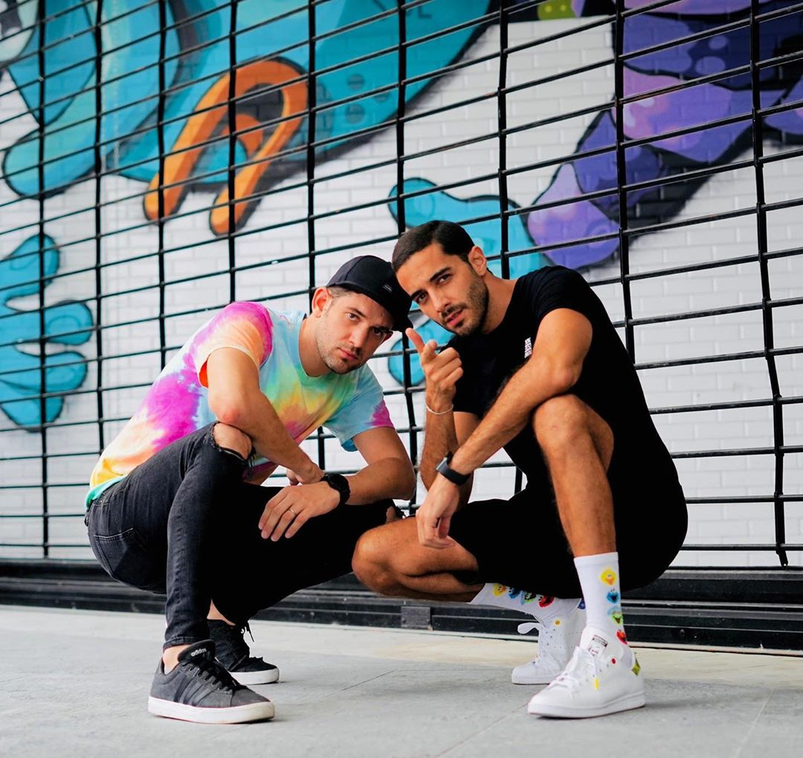

Cumbia y Tropical
Salsalvador All Stars
Año de debut: 2003
Último álbum: "Salsalvador All Stars" (2015)
Discografía:
- "Salsa y Punto" (2003)
- "Salsa Pa'l Mundo" (2005)
- "Ritmo y Sabor" (2007)
- "Salsa para Todos" (2010)
- "Salsalvador All Stars" (2015)
Redes sociales: Facebook
Orquesta San Vicente

Año de debut: 1968
Último álbum: No disponible
Discografía:
- "Cumbias y Gaitas" (1970)
- "Fiesta Tropical" (1974)
- "Ritmo Caliente" (1978)
- "Cumbia Morena" (1982)
- "La Bala" (1986)
Redes sociales: Facebook
Orquesta Premier
Año de debut: 1985
Último álbum: No disponible
Discografía:
- "Ritmo de mi Tierra" (1985)
- "Cumbia Caliente" (1987)
- "Sabor a Cumbia" (1990)
- "Amor de mi Vida" (1992)
- "La Fiesta" (1995)
Redes sociales: Facebook
Discografía:
- Tu Eres Mi Luz
- Se Que Diras Adios
- Ana
- “El botecito”
- “Oye nena”
- “Quiero que bailemos”
- "Los lamentos de Rosita"
- "Cayetaño baila"
- "Cumbia de la Siguanaba"
- "Lo pagaras"
- "Chipi, chipi"
- "Cumbia Caliente" (1991)
- "El Tamarindo" (1993)
- "Fiesta en El Salvador" (1996)
- "Cumbia de la Cerveza" (1998)
- "El Mero Mero" (2000)
- "Oro Sólido" (1994)
- "El Poder del Merengue" (1996)
- "Internacional" (1998)
- "Best of Oro Sólido" (2001)
- "Party Time" (2003)
- "Amor a Mil" (1990)
- "Rucks Parker" (1992)
- "Más que Ayer" (1994)
- "Siempre" (1996)
- "20 Años" (2010)
- "Despierta Corazón" (1992)
- "Eres Mi Todo" (1994)
- "Volver a Empezar" (1996)
- "Déjame Soñar" (1998)
- "Amor de Mi Vida" (2000)
- Tres (1985)
- Nada se compara contigo (1991)
- Mal Acostumbrado (2016)
- Bachata Rosa Cover
- Las De Antes (2012)
- "Todo mi amor" (2009)
- "Bolo y solo" (2009)
- "Nunca" (2006)
- YouTube
Alfredo José
Año de debut: 1992
Último álbum: “El negro”
Discografía:
Redes sociales: Instagram
Tito MIra
Año de debut: 1998
Último álbum: No disponible
Discografía:
Redes sociales: Facebook
René Alonso y su Banda Lasser

Año de debut: 1990
Último álbum: No disponible
Discografía:
Redes sociales: Facebook
Merengue y Tropical
Oro Sólido
Año de debut: 1993
Último álbum: "La Morena"
Discografía:
Redes sociales: Facebook
Baladas Románticas
Rucks Parker
Año de debut: 1989
Último álbum: No disponible
Discografía:
Redes sociales: Facebook
Rafa Guillén
Año de debut: 1990
Último álbum: No disponible
Discografía:
Redes sociales: Facebook
Álvaro Torres
Año de debut: 1985
Último álbum: Mal Acostumbrado (2016)
Discografía:
Ale Martore
Año de debut: 2004
Último álbum: Errante (2019)
Discografía:
Redes sociales: Instagram
Rock
Ale Medina GTM
Año de debut: 1974
Último álbum: HOY (2021)
Discografía:
Redes sociales: Instagram
Rafa García
Año de debut:1996
Último álbum: Sigue la venganza
Discografía:
Redes sociales:
Reggae y Hip Hop
Los Tachos
Nombre: Los tachos
Álbumes: Seducción (2013)
Año de Debut: 2007
Redes Sociales Oficiales:
Inicios del Artista: Los Tachos, Banda de Reggae nacida en San Salvador, El Salvador, en noviembre de 2007.
Lista de Canciones: Después de Tanto Tiempo (2021) En la Playa (2020) Esta Noche (2017) El Tren (Versión Funk) (2016) Summer Party (2016) After Party (2014)
Shaka y Dres
Nombre: Shaka y Dres
Nombre Artístico: Shaka y Dres
Canción o Álbum Más Reciente: Loco (single)
Álbumes: Abriendo Caminos (2005), Entre Líneas (2008), Renacer (2015)
Año de Debut: 2005
Redes Sociales Oficiales:
Inicios del Artista: El dúo comenzó su carrera en El Salvador, fusionando ritmos de reggae y hip hop.
Lista de Canciones: Loco, Amor Prohibido, Eres Tú, El Ritmo del Amor
Folclórica y Popular
VOCES
Nombre: VOCES
Nombre Artístico: VOCES
Canción o Álbum Más Reciente: Raíces (álbum)
Álbumes: Voces (2010), Canta Conmigo (2013), Raíces (2022)
Año de Debut: 2010
Redes Sociales Oficiales:
Inicios del Artista: Iniciaron como un grupo vocal que interpreta música folclórica y popular de El Salvador.
Lista de Canciones: El Carbonero, Torola, Adentro Cojutepeque, Santa Ana Mía